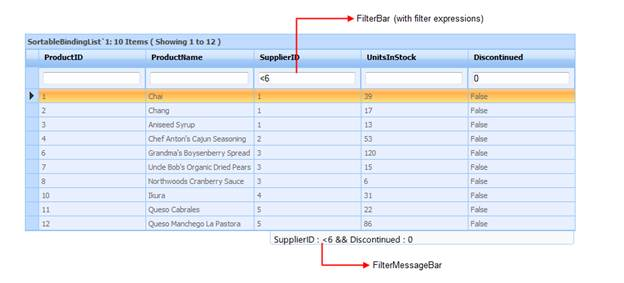

Expression filter feature allows grid to filter the records with different expressions depending upon the Column type.
This allows you to filter the values you want, with ease by manually entering data, using filter tokens unlike the combo and text filters.
The following figure gives you a basic idea of the appearance of the Filter Bar in ASP.NET Grid:

Figure 84: Grid with FilterBar and Filter Status Message bar
The User can filter data quickly by entering the filter expressions manually in the Filter Bar.
This feature is very user-friendly especially for advanced users, as the below filter options will be available with this feature:
· "<", ">", ">=", ">=", "=" for integer, double, decimal, date-time data columns.
· "*value"(Contains value), "%value"(Endswith value),"value%"(Beginswith value) for string data columns.
· "1"(true), "0"(false) for Boolean data columns.
· "Expression1 and Expression2", "Expression1 or Expression2" for all data columns.
 Adding FilterBar to a ASP.NET Grid
Adding FilterBar to a ASP.NET Grid